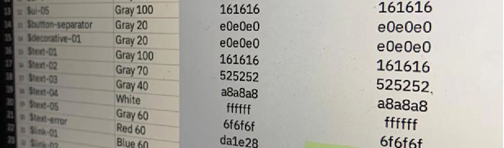
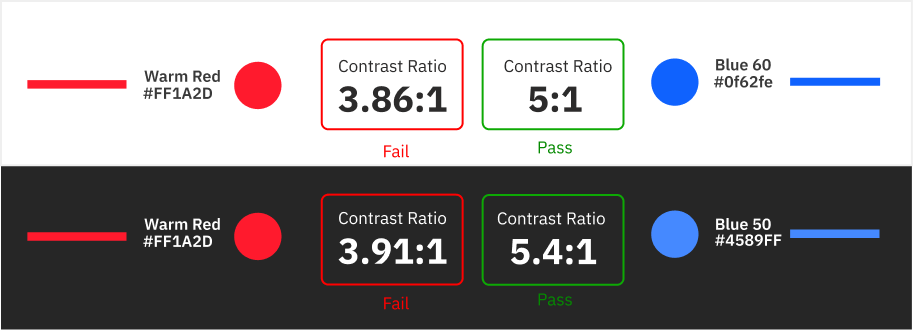
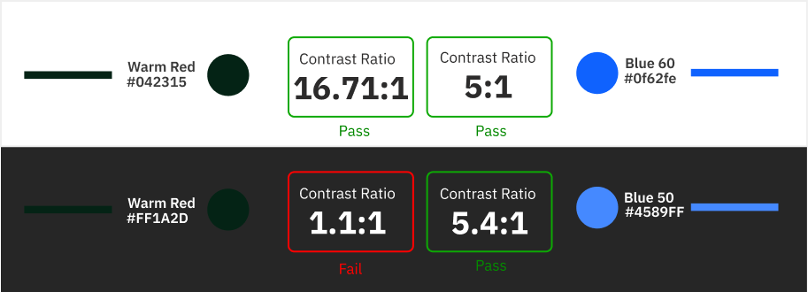

The
Problem
Update the palette to match the new brand
Following the spin-off from IBM, Kyndryl introduced a new brand identity built around nature, warm sunsets, and atmospheric gradients. The ask was simple on its face: update the software palette to match the new corporate brand.
Marketing color and functional color don't play by the same rules
Marketing relies on soft tones and atmospheric warmth. Enterprise software needs strict, unambiguous, high-contrast color for critical states, success, warning, error, interactive, that a user has to read correctly in a fraction of a second. The platform's front end was also built on IBM's Carbon Design System, specifically its Gray 10 light and Gray 100 dark themes. Swapping in soft marketing hex values directly would break component contrast, collapse the visual hierarchy, and fail accessibility outright.
A direct swap was never going to work
Testing the brand's actual hex values against Carbon's structural requirements confirmed it: a literal, one-to-one color replacement was mathematically incompatible with WCAG contrast minimums. Color couldn't be treated as a visual asset dropped into components. It had to be treated as a data pipeline.
Decouple the brand from the components entirely
Instead of hardcoding hex values into components, the fix was a layer of indirection: a semantic token system that could resolve brand intent into whatever concrete value each theme actually needed.
I bypassed hardcoded color swaps and engineered a three-tiered semantic token system instead.
Raw brand hex values got decoupled from component styling entirely. A dynamic mapping layer translated Kyndryl's core brand palette into strict, WCAG AA-compliant Carbon tokens automatically, so the brand and the interface could each change independently without breaking the other.
Three Token
Tiers
Three token layers made this work. Global tokens hold the raw brand palette. Semantic tokens describe intent, $ui-background, $interactive-primary, $support-error, rather than a specific color. Component tokens apply those semantic aliases to individual UI elements. A single token like $text-primary resolves to a dark gray in light mode and a light gray in dark mode automatically, so engineering never has to make a manual color decision again.




Under the
Tokens
How the tokens resolve, and how each pairing was verified.
Carbon relies on rigid color tokens for layout, container, and field states. Rather than rebuilding components from scratch, I mapped Kyndryl's core and support colors directly against Carbon's native Gray 10 light and Gray 100 dark structural logic. That inherited Carbon's already battle-tested layout math while replacing its identity wholesale.
- Global tokens: the raw brand palette, as defined by the brand team.
- Semantic tokens: intent aliases like
$ui-background,$support-error,$text-primary. - Component tokens: specific applications of those aliases to individual UI elements.
A single semantic token resolves to a different concrete value depending on the active theme, shielding engineering from ever having to make a manual color choice.
Every semantic token pairing went through mathematical validation against strict contrast ratio gates: a minimum of 4.5:1 for standard text and interactive controls, and 3:1 for large display text and structural borders. Support colors, reds, greens, ambers, got their luminance calibrated until every state passed WCAG 2.1 AA in both light and dark.
Accessibility alignment across the platform's components, in both light and dark themes.
Fewer usability issues as one semantic token language scaled across every modular app.
A clean CSS variable matrix handed to engineering, no hardcoded hex values and no theme regressions.
Looking
Back
What Went Well?
Bridging Brand and ProductTook a highly atmospheric, marketing-driven brand identity and translated it into a strict, functional, accessible product UI system without losing the brand's core essence.
Systematic ScalabilityThe semantic CSS token architecture meant any future brand update or theme addition could be implemented globally by updating base variables, rather than hunting down hardcoded hex values.
Developer AlignmentA clear, spreadsheet-driven mapping of Carbon's Gray 10/100 themes to the new semantic tokens gave engineering a frictionless, unambiguous handoff.
What Could I Have Done Better?
Automated Pipeline IntegrationManual Figma contrast testing drove 95% WCAG 2.1 alignment at the design phase, but integrating an automated contrast-checking linter directly into the CI/CD pipeline would have prevented accessibility regressions during future code updates.
Color-Blindness Empathy TestingMathematical contrast ratios passed for standard vision, but earlier qualitative testing with color-blind users specifically could have optimized the exact hues chosen for critical error and success states much faster.